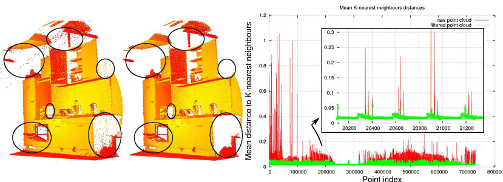

Removing outliers using a StatisticalOutlierRemoval filter
In this tutorial we will learn how to remove noisy measurements, e.g. outliers, from a point cloud dataset using statistical analysis techniques.
Background
Laser scans typically generate point cloud datasets of varying point densities. Additionally, measurement errors lead to sparse outliers which corrupt the results even more. This complicates the estimation of local point cloud characteristics such as surface normals or curvature changes, leading to erroneous values, which in turn might cause point cloud registration failures. Some of these irregularities can be solved by performing a statistical analysis on each point’s neighborhood, and trimming those which do not meet a certain criterion. Our sparse outlier removal is based on the computation of the distribution of point to neighbors distances in the input dataset. For each point, we compute the mean distance from it to all its neighbors. By assuming that the resulted distribution is Gaussian with a mean and a standard deviation, all points whose mean distances are outside an interval defined by the global distances mean and standard deviation can be considered as outliers and trimmed from the dataset.
The following picture shows the effects of the sparse outlier analysis and removal: the original dataset is shown on the left, while the resultant one on the right. The graphic shows the mean k-nearest neighbor distances in a point neighborhood before and after filtering.
The code
First, download the dataset table_scene_lms400.pcd and save it somewhere to disk.
Then, create a file, let’s say, statistical_removal.cpp in your favorite
editor, and place the following inside it:
1#include <iostream>
2#include <pcl/io/pcd_io.h>
3#include <pcl/point_types.h>
4#include <pcl/filters/statistical_outlier_removal.h>
5
6int
7main ()
8{
9 pcl::PointCloud<pcl::PointXYZ>::Ptr cloud (new pcl::PointCloud<pcl::PointXYZ>);
10 pcl::PointCloud<pcl::PointXYZ>::Ptr cloud_filtered (new pcl::PointCloud<pcl::PointXYZ>);
11
12 // Fill in the cloud data
13 pcl::PCDReader reader;
14 // Replace the path below with the path where you saved your file
15 reader.read<pcl::PointXYZ> ("table_scene_lms400.pcd", *cloud);
16
17 std::cerr << "Cloud before filtering: " << std::endl;
18 std::cerr << *cloud << std::endl;
19
20 // Create the filtering object
21 pcl::StatisticalOutlierRemoval<pcl::PointXYZ> sor;
22 sor.setInputCloud (cloud);
23 sor.setMeanK (50);
24 sor.setStddevMulThresh (1.0);
25 sor.filter (*cloud_filtered);
26
27 std::cerr << "Cloud after filtering: " << std::endl;
28 std::cerr << *cloud_filtered << std::endl;
29
30 pcl::PCDWriter writer;
31 writer.write<pcl::PointXYZ> ("table_scene_lms400_inliers.pcd", *cloud_filtered, false);
32
33 sor.setNegative (true);
34 sor.filter (*cloud_filtered);
35 writer.write<pcl::PointXYZ> ("table_scene_lms400_outliers.pcd", *cloud_filtered, false);
36
37 return (0);
38}
The explanation
Now, let’s break down the code piece by piece.
The following lines of code will read the point cloud data from disk.
// Fill in the cloud data
pcl::PCDReader reader;
// Replace the path below with the path where you saved your file
reader.read<pcl::PointXYZ> ("table_scene_lms400.pcd", *cloud);
Then, a pcl::StatisticalOutlierRemoval filter is created. The number of neighbors to analyze for each point is set to 50, and the standard deviation multiplier to 1. What this means is that all points who have a distance larger than 1 standard deviation of the mean distance to the query point will be marked as outliers and removed. The output is computed and stored in cloud_filtered.
// Create the filtering object
pcl::StatisticalOutlierRemoval<pcl::PointXYZ> sor;
sor.setInputCloud (cloud);
sor.setMeanK (50);
sor.setStddevMulThresh (1.0);
sor.filter (*cloud_filtered);
The remaining data (inliers) is written to disk for later inspection.
pcl::PCDWriter writer;
writer.write<pcl::PointXYZ> ("table_scene_lms400_inliers.pcd", *cloud_filtered, false);
Then, the filter is called with the same parameters, but with the output negated, to obtain the outliers (e.g., the points that were filtered).
sor.setNegative (true);
sor.filter (*cloud_filtered);
And the data is written back to disk.
writer.write<pcl::PointXYZ> ("table_scene_lms400_outliers.pcd", *cloud_filtered, false);
Compiling and running the program
Add the following lines to your CMakeLists.txt file:
1cmake_minimum_required(VERSION 3.5 FATAL_ERROR)
2
3project(statistical_removal)
4
5find_package(PCL 1.2 REQUIRED)
6
7include_directories(${PCL_INCLUDE_DIRS})
8link_directories(${PCL_LIBRARY_DIRS})
9add_definitions(${PCL_DEFINITIONS})
10
11add_executable (statistical_removal statistical_removal.cpp)
12target_link_libraries (statistical_removal ${PCL_LIBRARIES})
After you have made the executable, you can run it. Simply do:
$ ./statistical_removal
You will see something similar to:
Cloud before filtering:
header:
seq: 0
stamp: 0.000000000
frame_id:
points[]: 460400
width: 460400
height: 1
is_dense: 0
Cloud after filtering:
header:
seq: 0
stamp: 0.000000000
frame_id:
points[]: 429398
width: 429398
height: 1
is_dense: 0